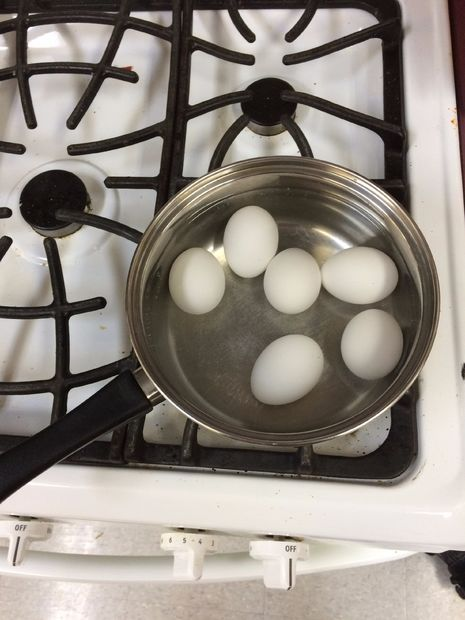
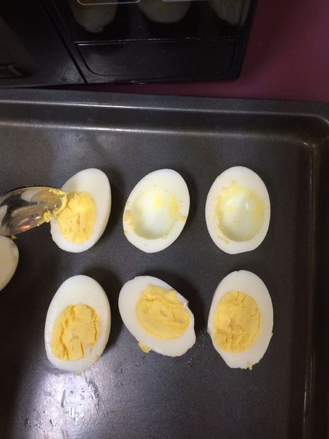
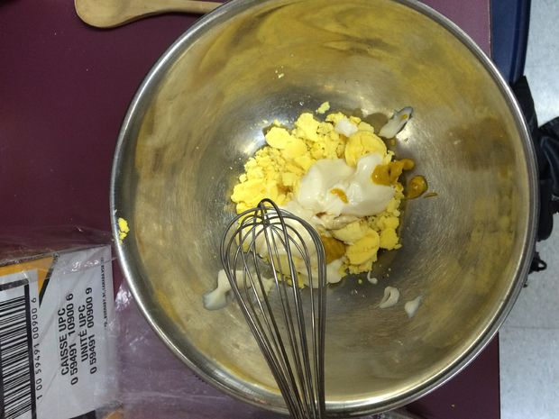
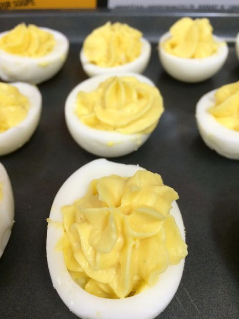
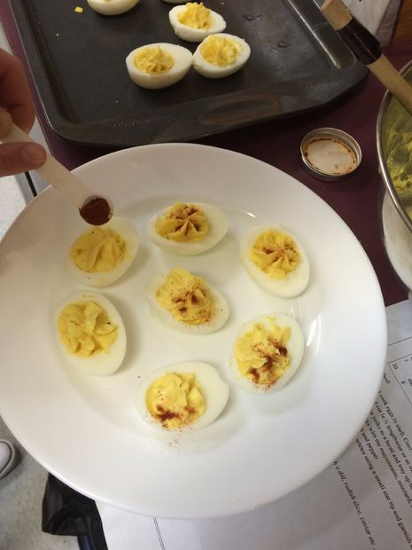

Password
Create Password
Password
Create Password

Take the eggs out of the refrigerator and place them gently into the pot.
Fill the pot with enough cold water to just cover the eggs.
Place the pot on the stove-top and set the heat to medium.
When the water comes to a boil, turn the stove-top off and let the eggs sit for 10 minutes, allowing the eggs to become hard boiled.
Dump the hot water out into a sink and then fill up the pot with cold water. Let the eggs sit for approximately 2 minutes.
Now that the eggs have cooled down, take them out of the water.
Use a hard surface to crack the egg. Once the shell has been cracked, use your thumb to remove the shell.
Use a knife to slice the egg in half lengthwise.
Use a spoon to remove the yolks from the egg whites. Place all yolks into the metal mixing bowl together.
Place the halved egg whites onto a tray with the open side up.
Use the whisk to mash the egg yolks up. During the mashing, add 60 mL of mayonnaise, 3 mL of mustard, a few drops of lemon juice, and a dash of worcestershire.
Continue mashing until all the ingredients are thoroughly mashed in.
Add in 3 mL of salt and 3 mL of pepper to season. Mix these two spices thoroughly.
Prepare your piping bag by placing the small star tip into the bag.
With a spoon, move the egg yolk mixture from the mixing bowl and place it in the piping bag.
Using your hands for pressure, squeeze the mixture from the piping bag into the egg whites. Pipe approximately a tablespoon of egg yolk into each egg white.
Once the egg whites have all been filled, you can now garnish them with a little bit of paprika.
Your deviled eggs are now ready for enjoyment!
